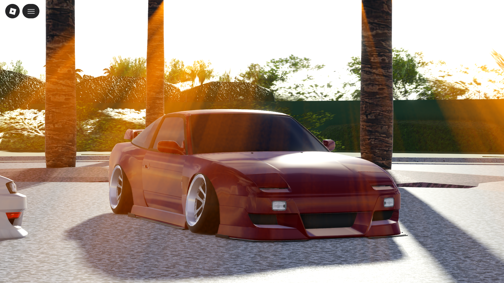
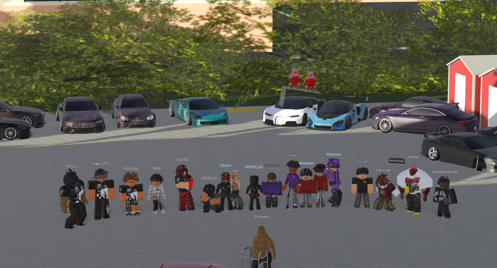

"Try anything once."
It’s a philosophy that can either broaden your perspective or land you in trouble. Still, it’s hard to understand a culture from the outside, and 1st Roll felt like the right moment to step in and observe without preconceptions. I was invited by Vagoon, Projex’s owner, to write this blog — an opportunity to document their debut and learn from the scene firsthand.
Held on 1st February 2026, 1st Roll marked Projex’s debut within the SWFL car community, and gave me my first chance to honestly think about what stance really is.
The meet brought together several crews — Renzoku (Now Kazoku), LowCTRL, Saku, Midnight Rush, and Torque Mafia — sharing the same space for the evening. Congratulations to all of them for arranging a successful meet!
Enough with the introduction, yes it is boring I agree. So, onto the meet —
The format remained mostly static.
There were no cruises or rolls, except for the three spots we moved to briefly.
Most of the cars leaned heavily toward stance-focused builds. Ride height, camber, fitment, and overall visual balance were the primary points of attention. The emphasis was clearly on how the cars looked rather than how they moved.
One of the more grounding moments of the evening came during a close, unhurried conversation with @lowwends, the owner of LowCTRL. Some members in the server were less welcoming — they asked us to leave and weren’t pleased with our presence. In contrast, lowwends was calm and approachable. Standing beside his Mercedes-AMG S63, the discussion moved away from specs and aesthetics almost immediately. The car itself carried presence, but what stood out was his composure and humility — rare qualities in a scene often defined by assertiveness. When asked about LowCTRL and where he saw the stance community heading, his answer was unexpected for someone who’s a part of the stance community:
"I’m just a chill guy. I created the server just to connect with fellow car lovers and create something, and pass it on in the future. It’s all about the love of the game and the cars."
As part of the evening, informal car ratings were held. Saku’s co-owner, Itsuki, received Best Looking Car for his red Nissan 180SX — a fitting result given the visual priorities of the night. Congratulations if you’re reading this!

Between the cars, dance circles formed. Conversations revolved around details, taste, and execution rather than routes or performance figures. The energy was social, expressive, and unhurried. If 1st Roll revealed anything, it’s that Projex is off to a strong start in the community, with a 400+ viewer count on their livestream.

Thank you for reading my views on yesterday’s meet, I’d like to know your views too, so feel free to @ me in the discord server!